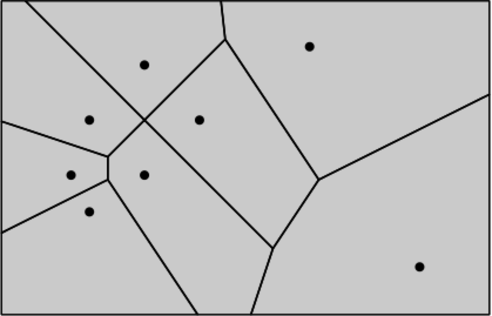
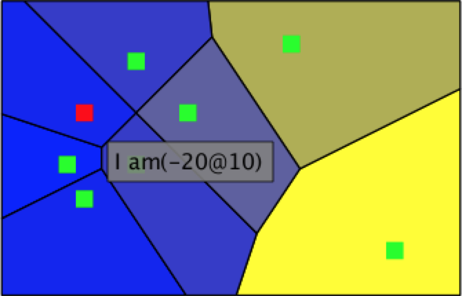

Voronyj (Voronoi) diagrams (посилання) are being used for more than 300 years in epidemiology, architecture, mining and machine learning. Now we not only provide the support for it in Roassal 2(посилання), but also suggest an approach to visualize a software with voronyj diagrams.
To download this just choose one method from the nexts:
- download image from link above CI server
-
run
Gofer new smalltalkhubUser: 'NataliaTymchuk' project: 'RTVoronyjDiagram'; configuration; load. #ConfigurationOfRTVoronyjDiagram asClass loadDevelopment -
download throught Monticello using the repository:
MCSmalltalkhubRepository owner: 'NataliaTymchuk' project: 'RTVoronyjDiagram'
If you want simple way how to use RTVoronyjBuilder,just run next code:
| o |
o := RTVoronyjBuilder new .
o objects: { 10 @ 40 . 40 @ 10 . 10 @ -20 . -20 @ 10.
-20 @ 60 . -30 @ 40 . 160 @ 90 . 100 @ -30 }.
o positionBlock: #yourself.
o open.
You will give you this image
But you also can use builder properties. Let
o := RTVoronyjBuilder new .
o objects: objects.
o positionBlock:#yourself.
Then you can add:
- site color:
o sites shape color: Color yellow. - site shape:
o sites shape rectangle. - site size:
o sites shape size: 30. - site interaction:
- popup text:
o sites interaction popupText: [ :obj | 'I am', obj asString ]. - highlight color
o sites interaction highlightColored: Color red.
- popup text:
- cell color:
o color: Color blue. - cell normalized color:
cn := RTNColorLinearNormalizer inContext: objects withCommand: #x lowColor: (Color r:0 g:0 b:1) highColor: (Color r:1 g:1 b:0). o color: cn.
Now using the code:
| o cn objects |
objects := { 10 @ 40 . 40 @ 10 . 10 @ -20 . -20 @ 10.
-20 @ 60 . -30 @ 40 . 160 @ 90 . 100 @ -30 }.
cn := RTNColorLinearNormalizer
inContext: objects
withCommand: #x
lowColor: (Color r:0 g:0 b:1)
highColor: (Color r:1 g:1 b:0).
o := RTVoronyjBuilder new .
o objects: objects.
o positionBlock: #yourself.
o color: cn.
o build.
o view
@ RTZoomableView;
yourself
you will get this image
